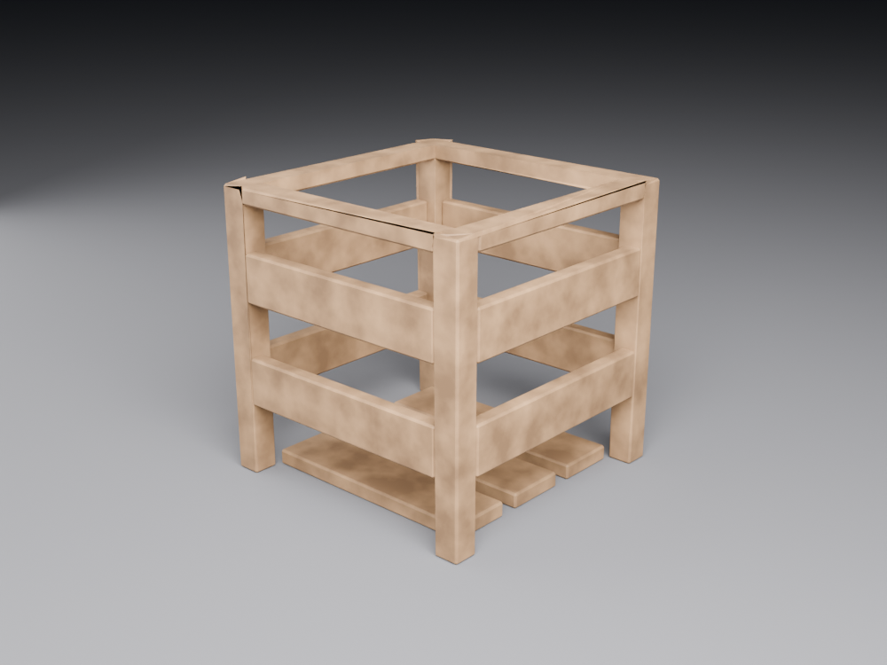

L2b — TP : texturer sans bake
Produire une caisse texturée crédible en PBR sans bake ni high-poly. C'est le premier des trois TP de texturing : on obtient déjà 80 % d'un résultat convaincant avec trois briques simples — fill layer, smart material et masques peints à la main — plus un peu de relief par height. Le bake viendra au TP suivant (L2c).
Les étapes sont décrites pour Substance 3D Painter, mais chaque geste a son équivalent gratuit : ArmorPaint, Material Maker ou le Texture Paint de Blender. Un encart « sans abonnement » te donne la marche à suivre plus bas.
Pourquoi commencer sans bake
Le bake (cuisson des mesh maps depuis un high-poly, voir F8) est l'étape qui bloque le plus de débutants : cage mal réglée, artefacts, high-poly à préparer… Résultat, beaucoup n'atteignent jamais la partie plaisante — donner de la matière. Ce TP renverse l'ordre : tu textures d'abord, tu bakes ensuite. Tu apprends la pile de calques (le cœur du non-destructif) sur un objet simple, sans dépendre d'un bake réussi.
Et ce n'est pas un pis-aller : beaucoup d'assets de production (surtout stylisés, mobiles ou props secondaires) sont texturés sans bake, à partir de fill layers et de masques. Savoir le faire proprement est une compétence à part entière.

La caisse en bois — pour ce TP, tu n'as besoin que du low-poly déplié. Importe-le tel quel : les UV sont déjà faits.
{kind=link}
Low ≈ 816 tris · UV box-map · libre d'usage. Objectif visuel : s'approcher de ref_low.png.
🔧 Démonstration pas à pas
Objectif : une caisse « bois usé + cerclage métal » propre, obtenue sans aucune cuisson. On empile trois calques et un peu de relief.
- Créer le projet. ▸ template PBR — Metallic Roughness ▸ charge
caisse_low.fbxdans Mesh. Résolution : 2048 px. On ne bake rien : on saute l'étape « Bake Mesh Maps ». - Poser la base bois (fill). Ajoute un Fill layer : règle une Base Color brun bois, une Roughness assez haute (0,7) et Metallic à 0. Toute la caisse devient un bois mat uniforme — ta fondation.
- Ajouter le cerclage métal (fill + masque à la main). Nouveau Fill layer métal (Metallic 1, Roughness 0,4, couleur gris). Clic droit ▸ Add black mask pour le cacher, puis peins en blanc les bandes et coins métalliques directement sur l'objet. Le métal n'apparaît que là où tu peins.
- Donner de la vie (smart material ou variation). Glisse un smart material « bois » au-dessus si tu en as un ; sinon ajoute un Fill de teinte plus foncée en mode Multiply, masqué par un Grunge (texture procédurale de saleté) pour casser l'uniformité. La matière cesse d'être « plate ».
- Usure sur les arêtes (courbure « douce »). Même sans high-poly, Painter calcule une Curvature approximative depuis la normale du mesh. Ajoute un Fill clair (bois éclairci/écaillé) + masque noir + generator Curvature : l'usure se pose sur les angles. Faible ? Peins un renfort d'usure à la main sur les coins les plus exposés.
- Relief sans géométrie (height). Ajoute un Paint layer et n'active que le canal Height : peins quelques rayures et joints entre planches. Painter les convertit en Normal à la volée — du relief crédible sans toucher au maillage.
- Comparer. Ouvre
ref_low.pngà côté de ton viewport : mêmes zones métal ? usure aux bons endroits ? Ajuste tes masques (c'est non destructif, tout reste réglable).
Blender (Texture Paint) : importe la caisse, crée un matériau + une image, peins par calques via l'add-on gratuit Paint System ou en empilant des Mix Nodes (base bois → masque peint → métal). Le height se simule avec un Bump node.
ArmorPaint : reprend presque à l'identique le flux fill + black mask + brosse.
Material Maker : reconstruis la matière en procédural (nœuds bruit → couleur → mélange), puis exporte les maps (approche « Designer »).
🖐Essaie maintenant~1 min
Sur ton fill « métal » masqué, prends un pinceau blanc à faible flux (20 %) et repasse plusieurs fois sur un coin : l'apparition est progressive. Passe le pinceau en noir pour effacer : le masque se peint dans les deux sens, sans jamais abîmer le calque.
⚠️ Pièges & erreurs courantes
🔧Exercice pratique
Texture la caisse fournie sans bake et rapproche-toi du rendu ref_low.png.
- Crée le projet en PBR Metallic Roughness et importe
caisse_low.fbx. - Empile : fill bois (base) → fill métal masqué à la main (cerclage) → variation (grunge) → usure Curvature → height (rayures).
- Garde chaque intention sur son propre calque ; rien n'est aplati.
- Optionnel : refais la même chose dans un outil gratuit (Blender/ArmorPaint/Material Maker).
- Le bois et le métal occupent les bonnes zones (métal sur les cerclages et coins).
- Le métal se lit comme du métal (Metallic 1, reflets), pas comme du plastique.
- Une usure discrète marque les arêtes/coins exposés.
- Au moins un détail en height (rayure ou joint) est visible.
- Rien n'est « aplati » : chaque calque reste réglable.
Vérifie ta compréhension
Clique sur la réponse que tu penses correcte : la bonne réponse et une explication s'affichent aussitôt.
- On peut obtenir 80 % d'un bon texturing sans bake : fill + masques + un peu de height.
- Un calque = une intention (base, métal, usure) ; on masque, on n'aplati jamais.
- Le metallic se règle à 1 pour du vrai métal ; sa couleur vient des reflets.
- Le height donne du relief crédible sans ajouter de géométrie.
- Tout est reproductible gratuitement (Blender, ArmorPaint, Material Maker).
Pour aller plus loin
- L2c — TP : bake high→low + export moteurs : on ajoute la cuisson et on sort les maps vers Unity/Unreal/Godot.
- F8 — Baking et B8 — Texture Paint & Baking : la théorie et la version Blender.
- L2 — Substance (concepts) : la théorie des calques, masques et générateurs.